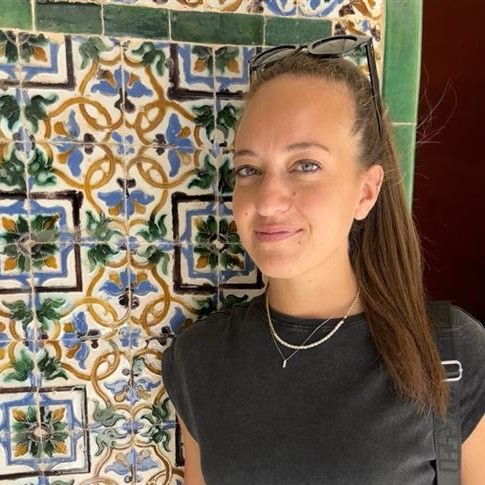

Shared Autonomy and Sense of Agency
(SASA)
2025 IROS Half-day Workshop
October 24th, 2025
14:00-18:00 (China Standard Time)
Abstract
Shared autonomy is revolutionizing Human-Robot interaction by seamlessly blending human intent with robot abilities.
This paradigm holds the potential to enhance user performance and experience across various applications, from remote manipulation to assistive technologies, like prostheses.
However, a critical challenge remains: how can we modulate robot autonomy to reduce user effort while preserving the user's sense of agency?
This workshop seeks to address this question by providing an overview about the link between shared autonomy and the sense of agency, starting from neuroscientific foundations and covering various application fields that share the common aspect of controlling external elements (prosthetics, teleoperation, etc.).
To address this, the workshop aims to explore four key aspects:
To address this, the workshop aims to explore four key aspects:
- Understanding sense of agency and embodiment: Which are the neuroscientific bases underlying the concepts of sense of agency, embodiment, and ownership?
- Understanding shared autonomy: What is shared autonomy?
- Insight into how shared autonomy affects agency: How does shared autonomy between humans and robotic agents influence the sense of agency?
- Promoting sense of agency through the sensory feedback: How can communication channels be effectively leveraged to enhance situational awareness, reduce cognitive load, and create a more natural control experience?
Organizers
Marco Controzzi
Associate Professor
Sant'Anna School of Advanced Studies
Dylan Losey
Assistant Professor
Virginia Tech
Ahmed Shehata
Canada Research Chair
University of New Brunswick

Manuela Uliano
PhD Student
Sant'Anna School of Advanced Studies
Silvia Fattorini
PhD Student
Sant'Anna School of Advanced Studies
Schedule
| Time | Topic | Speaker |
|---|---|---|
| 14:00 - 14:10 | Welcoming remarks | |
| 14:10 - 14:40 | First talk + Q&A | Wen Wen |
| 14:40 - 15:10 | Second talk + Q&A | Sara Falcone |
| 15:10 - 15:40 | Third talk + Q&A | Freek Stulp |
| 15:40 - 16:10 | Coffee break and Poster session | |
| 16:10 - 16:40 | Fourth talk + Q&A | Henny Admoni |
| 16:40 - 17:10 | Fifth talk + Q&A | Strahinja Dosen |
| 17:10 - 17:50 | Panel session | |
| 17:50 - 18:00 | Closing remarks and Poster awards |
Invited speakers
Five invited talks by leading experts in fields such as neuroscience and robotics will cover state-of-the-art topics related to the relationship between autonomy and agency in Human-Robot interaction. At the end of each talk, Q&A sessions will facilitate immediate discussion on the key points covered by the speakers.
Wen Wen
Associate Professor
University of Rikkyo
Talk title:
"The Sense of Agency in Human-Robot Interaction: Perspectives and Insights from Cognitive Psychology"
Sara Falcone
Assistant Professor
Pace University
Talk title:
"A Multidisciplinary Investigation to Unravel the Complexity of the Sense of Embodiment in Teleoperation"
Freek Stulp
Head of Department of Cognitive Robotics
German Aerospace Center (DLR)
Talk title:
"Shared Control Templates for Assistive Robots"
Henny Admoni
Associate Professor
Carnegie Mellon University
Talk title:
"The Sense of Agency in Assistive Robotics Using Shared Autonomy"
Strahinja Dosen
Professor
Aalborg University
Talk title:
"Shared Control and Sensory Feedback in Bionic Limbs"
Panel session
After the five invited talks, a dedicated panel will encourage a broader and more in-depth exchange of ideas, driven by audience questions and interactions. In addition to the five invited speakers, additional researchers will take part in the panel session, enriching the discussion with their diverse perspectives and expertise:
Annette Hagengruber
Team leader
German Aerospace Center (DLR)
Maggie Collier
PhD student
Carnegie Mellon University